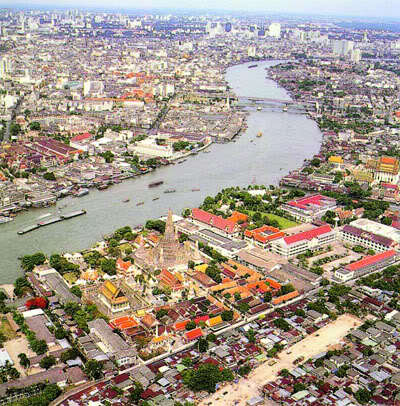
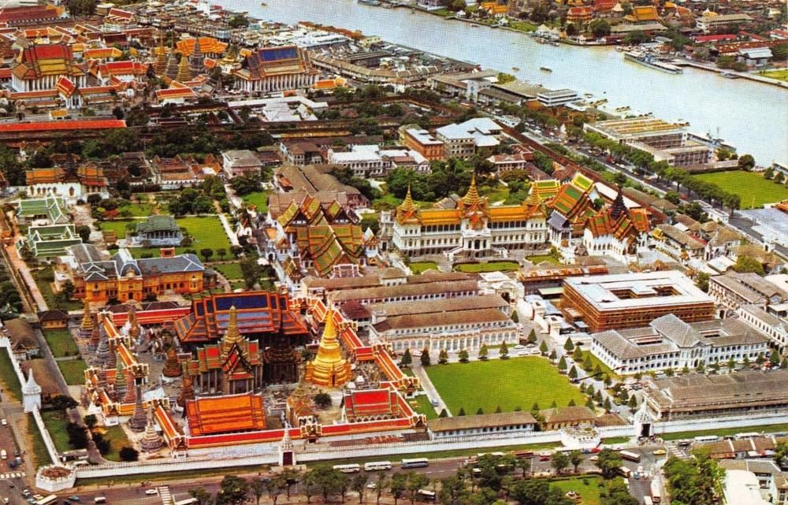

|
| ประวัติ |
|  | 1) กรุงเทพมหานครช่วง พ.ศ. 2325 - 2514 กรุงเทพมหานครเดิมเรียกว่า“เมืองบางกอก”ต่อมาได้รับการสถาปนา ขึ้นเป็นเมืองหลวงเมื่อวันที่ 21 เมษายน พ.ศ. 2325 ในรัชสมัยของพระบาทสมเด็จพระพุทธยอดฟ้าจุฬา โลกมหาราชปราบดา ภ ิเษ กเป็นปฐมกษัตริย ์แห่งราชวงศ์จักรี ซึ่งพระองค์ท่านได้ทรงมีพระราช ดำริว่ากรุงธนบุรีตั้งอยู่ในที่คับแคบ ไม่ต้องด้วยหลักพิชัยสงคราม ต่างกับกรุง เทพมหานครที่มีลักษณะพื้นที่อันเป็นที่ เหมาะสมด้วยจุดยุทธศาสตร์ จึงทรง ตัดสินพระทัย โปรดเกล้าฯ สถาปนากรุงเทพมหานคร เป็นเมืองหลวงของประเทศ พระราชทานนามว่า “กรุงเทพมหานคร อมรรัตนโกสินทร์ มหินทราอยุธยา มหาดิลก ภพนพรัตน์ราชธานีบุรีรมย์ อุดมราชนิเวศน์ มหาสถาน อมรพิมาน อวตารสถิต สักกะ ทัตติยะ วิษณุกรรมประสิทธิ์” เพื่อเป็นมงคลนามนับแต่นั้นเป็นต้นมา ซึ่งแต่เดิมนั้น ใช้คำว่า “บวรรัตนโกสินทร์” แต่มาเปลี่ยน นามพระนครในสมัยรัชกาลที่ 4 เป็น “อมรรัตนโกสินทร์” แทน |
2) กรุงเทพมหานครช่วงประกาศคณะปฏิวัติ ฉบับที่ 335 (พ.ศ. 2514 - 2515) เมื่อวันที่ 21 ธันวาคม พ.ศ. 2514 ในระหว่างที่คณะปฏิวัติทำหน้าที่บริหารประเทศ ได้มีประกาศคณะปฏิวัติฉบับที่ 24 และ 25 ให้ปรับปรุงระบบการปกครองจังหวัดพระนครและจังหวัดธนบุรี โดยสาระสำคัญของประกาศคณะปฏิวัติดังกล่าว คือ มีการรวมจังหวัดพระนครและจังหวัดธนบุรีเข้าเป็นจังหวัดเดียวกัน เรียกว่า “จังหวัดนครหลวงกรุงเทพธนบุรี” และเมื่อรวมกันแล้วสภาพของนครหลวงกรุงเทพธนบุรียังคงมีรูปแบบ การปกครองและการบริหารราช การส่วนภูมิภาคอยู่เช่นเดิม มีผู้ว่าราชการจังหวัด เรียกว่า “ผู้ว่าราชการจังหวัดนครหลวงกรุงเทพธนบุรี” มีรองผู้ว่าราชการจังหวัด 2 คน และรวมองค์การบริหารส่วนจังหวัด 2 องค์การเข้าด้วยกันเป็น “องค์การบริหารนครหลวงกรุงเทพธนบุรี” มีสภาจังหวัดเรียกว่า “สภานครหลวงกรุงเทพธนบุรี” และรวมเทศบาลทั้งสองเข้าด้วยกัน เป็น “เทศบาลนครหลวง” ประกอบด้วย “สภาเทศบาลนครหลวง” และ “เทศมนตรี” ซึ่งรัฐมนตรีว่า การกระทรวง มหาด ไทยแต่งตั้ง มีจำนวน สมาชิกสภาเทศบาลนครหลวงไม่เกิน 36 คน และมีเทศมนตรีอื่นอีกไม่เกิน 8 คน โดยมีผู้ว่าราชการนครหลวง กรุงเทพธนบุรีเป็นนายกเทศมนตรีนครหลวง โดยตำแหน่ง และเป็นผู้รับผิดชอบในการบริหารงาน |
 |
 |
กรุงเทพมหานครช่วงพระราชบัญญัติระเบีย บบริหารราชการกรุงเทพมหานคร พ.ศ. 2528 หลังจากกรุงเทพมหานครมีการเลือกตั้งผู้ว่าราชการกรุงเทพมหานคร รองผู้ว่าราชการกรุงเทพมหานคร โดยตรงจากประชาชนตามพระราชบัญญัติระเบียบ บริหารราชการกรุงเทพมหานคร พ.ศ. 2518 และบริหารงานได้เพียงปีเศษ ได้เกิดความขัดแย้งอย่างรุนแรงทั้งในฝ่ายบริหารและฝ่ายนิติบัญญัติ ซึ่งก่อให้เกิดผลเสียหายแก ่ราชการกรุงเทพมหานคร นายกรัฐมนตรี นายธานินทร์ กรัยวิเชียร ได้มีคำสั่ งตามมาตรา 21 ของรัฐธรรมนูญ พ.ศ. 2519 ให้ผู้ว่าราชการกรุงเทพมหานคร รองผู้ว่าราชการกรุงเทพมหานครพ้นจาก ตำแหน่งและให้ยุบสภากรุงเทพมหานคร และแต่งตั้งบุคคลภายนอกเข้ามาดำรง ตำแหน่งผู้ว่าราชการกรุงเทพมหานครและสมาชิก สภากรุงเทพมหานครแทนเรื่อยมาจนถึงปี พ.ศ. 2528 |